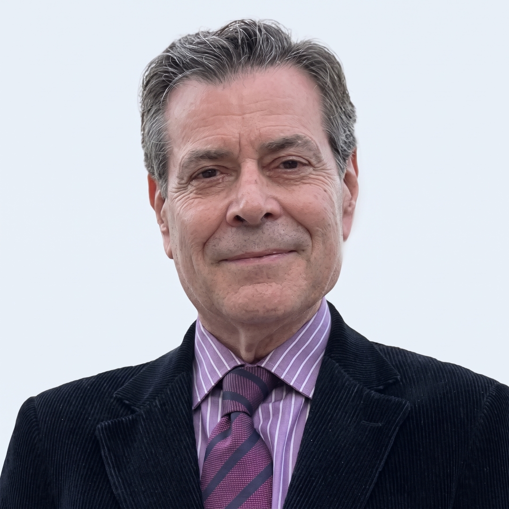
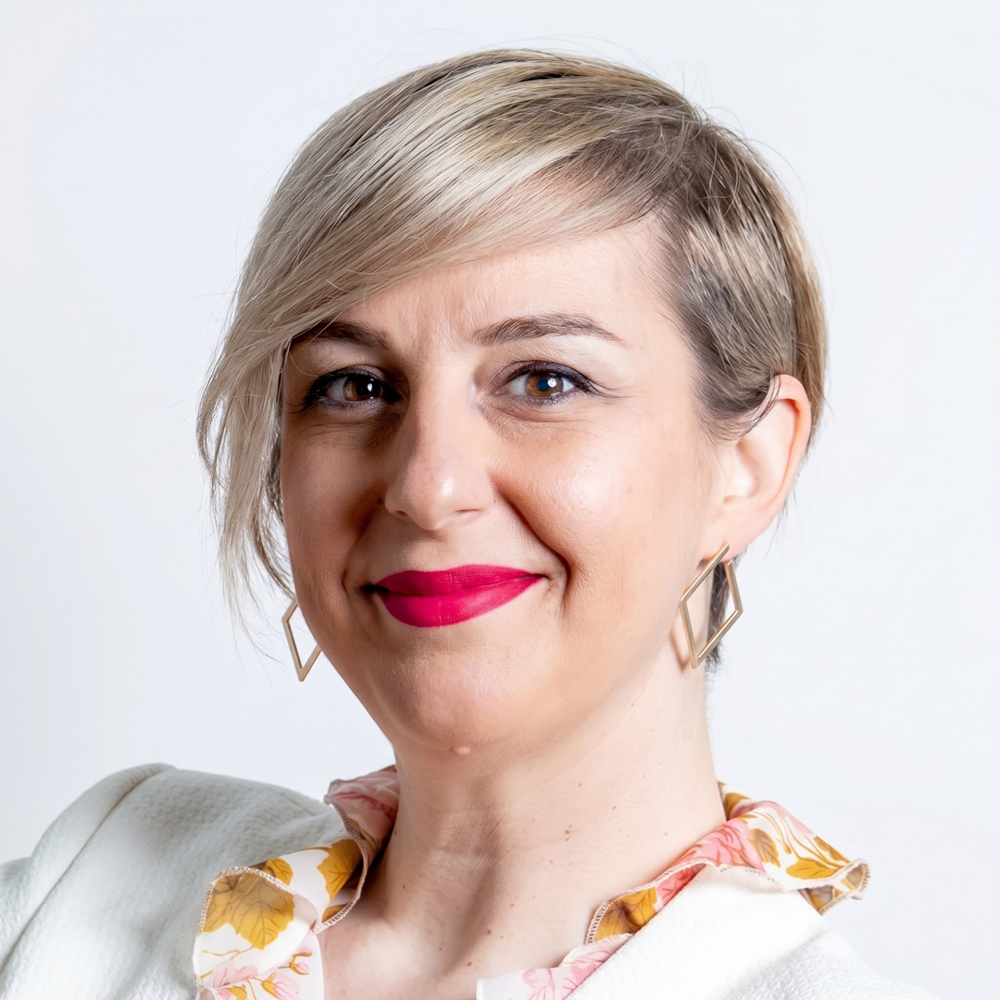

Prof. Dr. Luís Bragança
School of Engineering, University of Minho, Portugal
Prof. Dr. Luís Bragança is a Professor at the University of Minho, Portugal, where he serves as Director of the International Doctoral Programme in Sustainable Built Environment (iDiSBE), the Master's Programme in Sustainable Construction and Rehabilitation, and the Laboratory of Energy and Sustainable Construction. He is Chair of COST Action CircularB (CA21103) and President of iiSBE Portugal. From 2011 to 2021, he served as President of the International Initiative for a Sustainable Built Environment (iiSBE).
His scientific and professional activities focus on the sustainability of the built environment, sustainable construction, the circular economy, life-cycle assessment, sustainable building rehabilitation, building physics, and construction technology. Throughout his career, he has coordinated and participated in 33 competitively funded national and international research projects, 11 as leader or co-leader. He is the author or co-author of more than 500 publications, including over 400 scientific journal articles, and three registered patents. He has also supervised or co-supervised 14 doctoral theses.

Prof. Dr. Radmila Salic Makreska
Institute of Earthquake Engineering and Engineering Seismology, North Macedonia
Prof. Dr. Radmila Salic Makreska is a Professor and the Deputy Director for International Cooperation & Development at the Institute of Earthquake Engineering and Engineering Seismology (UKIM-IZIIS) in Skopje. Her professional activities encompass leading and contributing to projects for international organisations such as the UNDP, WHO, World Bank, EBRD, and JICA. Notably, she is a co-author of the Seismic Zoning Maps developed for the National Annex to Eurocode 8.
Throughout her career, Prof. Dr. Salic Makreska has engaged in numerous training programmes and study visits across Europe and Asia. She serves on multiple national crisis and disaster management bodies, as well as professional and scientific associations. Since 2023, she has served as an Executive Committee member of the European Facilities for Earthquake Hazard and Risk (EFEHR).
Her extensive academic record features over 60 scientific papers presented at national and international conferences, more than 120 professional reports, 16 peer-reviewed journal publications, and a forthcoming book published by Springer Nature. In recognition of her notable achievements in civil engineering practice, she has been a multi-time award recipient from the Macedonian Association of Structural Engineers.